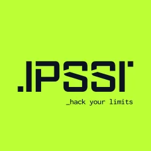
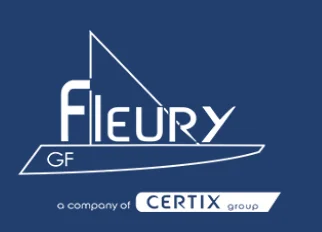
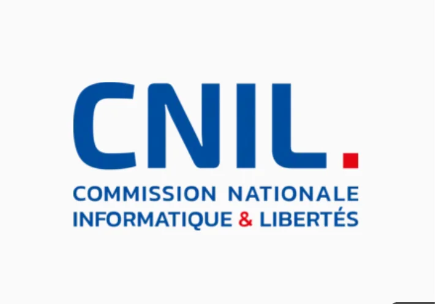
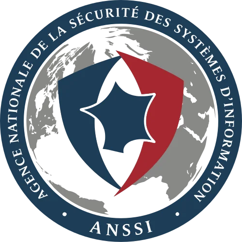

Je m'appelle Kevin Granday et je suis actuellement en première année de BTS SIO option SISR à l'IPSSI de Saint-Quentin-en-Yvelines.
Passionné par l'informatique, je suis curieux de comprendre comment fonctionnent les systèmes et les réseaux qui nous entourent au quotidien.
Après un Diplôme d'Accès aux Études Universitaires, j'ai choisi de me spécialiser dans l'infrastructure et l'administration systèmes. Mon objectif est de développer une expertise solide pour évoluer vers des postes d'administrateur systèmes et réseaux, tout en restant ouvert aux opportunités dans la cybersécurité.

Formation en Services Informatiques aux Organisations, spécialité Infrastructure, Systèmes et Réseaux.

Travail en environnement industriel exigeant — rigueur, respect des procédures et capacité d'adaptation rapide.
Gestion des stocks, suivi des commandes et coordination logistique — organisation et sens des priorités.
Supervision d'équipe en environnement haute cadence — gestion du stress, communication et prise de décision rapide.
Gestion complète d'un établissement : management d'équipe, planning, relation client et suivi financier — autonomie et sens des responsabilités.

